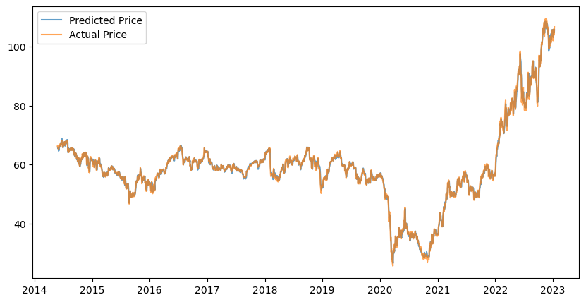
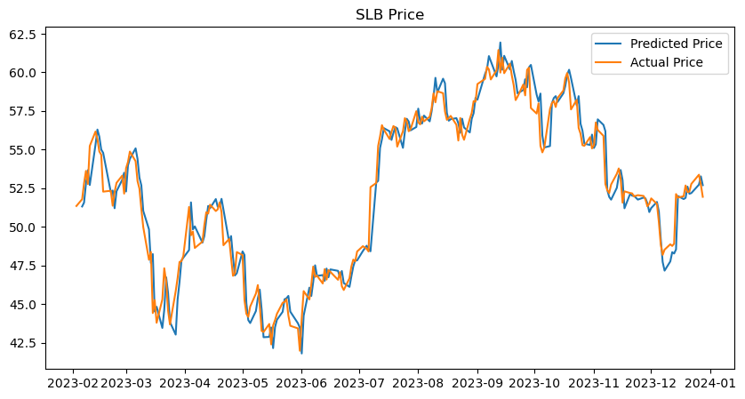

import torch
import torch.nn as nn
import torch.optim as optim
import torch.utils.data as data
from torch.autograd import Variable
import matplotlib.pyplot as plt
import yfinance as yf
from sklearn.model_selection import train_test_split
import numpy as np
import pandas as pd
from datetime import datetime, timedelta
from dateutil.relativedelta import relativedeltaLSTM
Source: [https://cnvrg.io/pytorch-lstm/]
Basically a NN for sequential data.
You’ll see below that for the testing data, the predicted stock prices aren’t super accurate but the model identifies the trend of the stock pretty well.
%load_ext autoreload
%autoreload 2
from lstm_model import LSTMModelThe autoreload extension is already loaded. To reload it, use:
%reload_ext autoreloadCreate Data
ticker = 'XOM'
start_date = '2014-01-01'
end_date = '2024-01-01'
# data = yf.download(ticker, start=start_date, end=end_date)
ticker_data = yf.Ticker(ticker)
data = ticker_data.history(start=start_date, end=end_date)
# Calculate the daily returns
data['Returns'] = data['Close'].pct_change()
# Calculate moving averages and std
data['SMA_10'] = data['Close'].rolling(window=10).mean()
data['SMA_20'] = data['Close'].rolling(window=20).mean()
data['SMA_50'] = data['Close'].rolling(window=50).mean()
data['SMA_100'] = data['Close'].rolling(window=100).mean()
data['Std_Dev'] = data['Close'].rolling(window=20).std()
# Calculate the z-score
data['Z_Score'] = (data['Close'] - data['SMA_20']) / data['Std_Dev']
# Calculate RSI
delta = data['Close'].diff()
up = delta.clip(lower=0)
down = -1 * delta.clip(upper=0)
ema_up = up.ewm(com=13, adjust=False).mean()
ema_down = down.ewm(com=13, adjust=False).mean()
rs = ema_up / ema_down
data['RSI'] = 100 - (100 / (1 + rs))
# Calculate TTM EPS and P/E
eps = ticker_data.get_earnings_dates(limit=60)
eps = eps[(eps.index >= (data.index[0]-relativedelta(years=1))) & (eps.index <= data.index[-1])]
eps = eps.iloc[::-1]
eps['TTM'] = eps['Reported EPS'].rolling(window=4).sum()
eps.index = eps.index.date
idx = pd.date_range(eps.index[0], eps.index[-1])
eps = eps.reindex(idx.date, fill_value=np.nan)
data.index = data.index.date
data['TTM_EPS'] = eps['TTM'].copy()
data[data['TTM_EPS'].notna()]
data['TTM_EPS'] = data['TTM_EPS'].ffill()
data['TTM_EPS'] = data['TTM_EPS'].fillna(eps['TTM'].loc[eps['TTM'].notna()].iloc[0])
data['TTM_P/E'] = data['Close'] / data['TTM_EPS']
# If stock price goes up or down
data['Target'] = data['Close'].shift(-1)
data.dropna(inplace=True)
# Wanted features for X and y
features = ['Close', 'Returns', 'SMA_20', 'SMA_50', 'Std_Dev', 'Z_Score', 'RSI', 'TTM_EPS', 'TTM_P/E']
X = data.loc[:, data.columns != 'Target']
y = data.iloc[:, (data.shape[1]-1):(data.shape[1])]X.head()| Open | High | Low | Close | Volume | Dividends | Stock Splits | Returns | SMA_10 | SMA_20 | SMA_50 | SMA_100 | Std_Dev | Z_Score | RSI | TTM_EPS | TTM_P/E | |
|---|---|---|---|---|---|---|---|---|---|---|---|---|---|---|---|---|---|
| 2014-05-27 | 66.392317 | 66.581804 | 65.948002 | 66.228966 | 8359700 | 0.0 | 0.0 | 0.000395 | 66.249862 | 66.348911 | 64.490827 | 63.077422 | 0.407439 | -0.294387 | 55.976566 | 7.35 | 9.010744 |
| 2014-05-28 | 66.144018 | 66.692875 | 66.026406 | 66.032936 | 7586700 | 0.0 | 0.0 | -0.002960 | 66.164919 | 66.358520 | 64.587218 | 63.094929 | 0.396955 | -0.820204 | 53.417316 | 7.35 | 8.984073 |
| 2014-05-29 | 66.346549 | 66.418424 | 66.006777 | 66.170128 | 6113700 | 0.0 | 0.0 | 0.002078 | 66.098270 | 66.343837 | 64.681291 | 63.115356 | 0.398285 | -0.436143 | 54.969020 | 7.35 | 9.002738 |
| 2014-05-30 | 65.863060 | 66.091750 | 65.582096 | 65.686638 | 11499000 | 0.0 | 0.0 | -0.007307 | 66.081938 | 66.337431 | 64.778413 | 63.129980 | 0.408152 | -1.594486 | 48.799597 | 7.35 | 8.936958 |
| 2014-06-02 | 65.686622 | 65.915313 | 65.124695 | 65.301117 | 7761300 | 0.0 | 0.0 | -0.005869 | 66.029665 | 66.292278 | 64.856793 | 63.131664 | 0.469074 | -2.113013 | 44.509885 | 7.35 | 8.884506 |
Scale Data
from sklearn.preprocessing import StandardScaler, MinMaxScaler
ss1 = StandardScaler()
ss2 = StandardScaler()
# mm2 = MinMaxScaler()
# ss2 = StandardScaler()
# X_ss = pd.DataFrame(ss.fit_transform(X), index=X.index, columns=X.columns)
# y_mm = pd.DataFrame(mm.fit_transform(y), index=y.index, columns=y.columns)
# Split data into first 80% and last 20%
X_train, X_test, y_train, y_test = train_test_split(X, y, test_size=0.1, random_state=42, shuffle=False)
X_train_ss = pd.DataFrame(ss1.fit_transform(X_train), index=X_train.index, columns=X.columns) # fit ss and transform X_train
y_train_mm = pd.DataFrame(ss2.fit_transform(y_train), index=y_train.index, columns=y.columns) # fit mm and transform y_train
X_test_ss = pd.DataFrame(ss1.transform(X_test), index=X_test.index, columns=X.columns) # transform X_test with fitted ss
y_test_mm = pd.DataFrame(ss2.transform(y_test), index=y_test.index, columns=y.columns) # transform y_test with fitted mm
train = pd.concat([X_train_ss, y_train_mm], axis=1)
test = pd.concat([X_test_ss, y_test_mm], axis=1)Prepare Data for LSTM
Converts the Numpy Arrays to Tensors and to Variables (which can be differentiated).
features_ = ['SMA_20', 'SMA_50', 'Std_Dev', 'Z_Score', 'RSI', 'Close', 'TTM_P/E'] # Features to train with.
X_train_tensors = Variable(torch.Tensor(np.array(X_train_ss[features_])))
X_test_tensors = Variable(torch.Tensor(np.array(X_test_ss[features_])))
y_train_tensors = Variable(torch.Tensor(y_train_mm.values))
y_test_tensors = Variable(torch.Tensor(y_test_mm.values))def create_dataset(X_data, y_data, lookback):
"""Transform a time series into a prediction dataset
Args:
dataset: A numpy array of time series, first dimension is the time steps
lookback: Size of window for prediction
"""
X, y = [], []
for i in range(len(X_data)-lookback):
feature = X_data[i:i+lookback]
target = y_data[i+1:i+lookback+1]
X.append(feature)
y.append(target)
return torch.stack(X), torch.stack(y)(create_dataset(X_train_tensors, y_train_tensors, 1))[1].shapetorch.Size([2173, 1, 1])import torch
from torch.utils.data import Dataset
class SequenceDataset(Dataset):
def __init__(self, dataframe, target, features, sequence_length=5):
self.features = features
self.target = target
self.sequence_length = sequence_length
self.y = torch.tensor(dataframe[target].values).float()
self.X = torch.tensor(dataframe[features].values).float()
def __len__(self):
return self.X.shape[0]
def __getitem__(self, i):
if i >= self.sequence_length - 1:
i_start = i - self.sequence_length + 1
x = self.X[i_start:(i + 1), :]
else:
padding = self.X[0].repeat(self.sequence_length - i - 1, 1)
x = self.X[0:(i + 1), :]
x = torch.cat((padding, x), 0)
return x, self.y[i]# train_dataset = SequenceDataset(
# df_train_ss,
# target='Target',
# features=features_,
# sequence_length=30
# )# train_loader = torch.utils.data.DataLoader(train_dataset, batch_size=6, shuffle=True)
# #test_loader = torch.utils.data.DataLoader(test_dataset, batch_size=batch_size, shuffle=False)# X, y = next(iter(train_loader))
# print("Features shape:", X.shape)
# print("Target shape:", y.shape)Training
X_train_final, y_train_final = create_dataset(X_train_tensors, y_train_tensors, lookback=1)
X_test_final, y_test_final = create_dataset(X_test_tensors, y_test_tensors, lookback=1)
print("Training Shape", X_train_final.shape, y_train_final.shape)
print("Testing Shape", X_test_final.shape, y_test_final.shape) Training Shape torch.Size([2173, 1, 7]) torch.Size([2173, 1, 1])
Testing Shape torch.Size([241, 1, 7]) torch.Size([241, 1, 1])num_epochs = 1000 # 1000 epochs
learning_rate = 0.001 # 0.001 lr
input_size = X_train_final.shape[2] # number of features
hidden_size = 32 # number of features in hidden state
num_layers = 1 # number of stacked lstm layers
batch_size = X_train_final.shape[0]
lookback = 1
num_classes = 1 #number of output classesdata_loader_train = torch.utils.data.DataLoader(torch.utils.data.TensorDataset(X_train_final, y_train_final),
shuffle=True,
batch_size=batch_size)
data_loader_test = torch.utils.data.DataLoader(torch.utils.data.TensorDataset(X_test_final, y_test_final),
shuffle=True,
batch_size=batch_size)lstm = LSTMModel(num_classes, input_size, hidden_size, num_layers, seq_length=lookback, batch_size=batch_size) #our lstm class criterion = torch.nn.MSELoss() # mean-squared error for regression
optimizer = torch.optim.Adam(lstm.parameters(), lr=learning_rate) # ADAM optimizer# from custom_data_loader import MyDataset# data_loader_train = torch.utils.data.DataLoader(
# MyDataset((X_train_tensors, y_train_tensors), window),
# batch_size=batch_size,
# shuffle=False
# )# data_loader_train = torch.utils.data.DataLoader(
# torch.utils.data.TensorDataset(X_train_final, y_train_tensors),
# batch_size=batch_size,
# shuffle=True
# )for i, (X_, y_) in enumerate(data_loader_train):
if i == 0:
print(X_.size())
print(y_.size())
print(i)torch.Size([2173, 1, 7])
torch.Size([2173, 1, 1])
0for epoch in range(num_epochs):
for i, data in enumerate(data_loader_train):
X_, y_ = data
outputs = lstm.forward(X_) #forward pass
optimizer.zero_grad() #calculate the gradient, manually setting to 0
# obtain the loss function
loss = criterion(outputs, y_.reshape(y_.size(0)*y_.size(1), 1))
loss.backward() #calculates the loss of the loss function
optimizer.step() #improve from loss, i.e backprop
# if (i + 1) % 50 == 0:
# print(f"Epoch {epoch}, batch {i:>3}, loss on batch: {loss.item():.3f}")
if epoch % 100 == 0:
print("Epoch: %d, loss: %1.5f" % (epoch, loss.item()))Epoch: 0, loss: 0.98336
Epoch: 100, loss: 0.02265
Epoch: 200, loss: 0.01078
Epoch: 300, loss: 0.01014
Epoch: 400, loss: 0.00979
Epoch: 500, loss: 0.00954
Epoch: 600, loss: 0.00935
Epoch: 700, loss: 0.00917
Epoch: 800, loss: 0.00898
Epoch: 900, loss: 0.00880with torch.no_grad():
# train_plot = np.ones_like(timeseries) * np.nan
# y_pred = model(X_train)
# y_pred = y_pred[:, -1, :]
# train_plot[lookback:train_size] = model(X_train)[:, -1, :]
# shift test predictions for plotting
#test_plot = np.ones_like(y_test) * np.nan
test_plot = lstm(X_test_final)[:, 0]plt.plot(test_plot.data.numpy())
plt.plot(y_test_final[:, -1, :].data.numpy())
#plt.plot(y_test_final[:, -1, :].data.numpy())train_predict = lstm(X_train_final).data.numpy()
train_predict = ss2.inverse_transform(train_predict)# run these once
#train_predict = ss2.inverse_transform(train_predict) # reverse transformation
X_train = pd.DataFrame(ss1.inverse_transform(X_train_ss), index=X_train_ss.index, columns=X_train_ss.columns) # reverse transformation for training datapredicted_price = pd.DataFrame(train_predict)
predicted_price.columns = ['Predicted_Price']
predicted_price.size
idx = X_train.index[:predicted_price.size]
predicted_price.index = idx
X_train = pd.concat([X_train, predicted_price], ignore_index=False, axis=1)
X_train = X_train.dropna()#X_train['Predicted_Price'] = data_predict
X_train['Actual_Signal'] = (X_train['Returns'].shift(-1) > 0).astype(int) # actual signal, 1 if next-day returns > 0, 0 if next-day returns <= 0
X_train['Predicted_Returns'] = X_train['Predicted_Price'].pct_change() # calculate returns of predicted stock price
X_train['Predicted_Signal'] = (X_train['Predicted_Returns'] > 0).astype(int) # predicted signal based on predicted returns
X_train['Strategy_Returns'] = X_train['Returns'] * X_train['Predicted_Signal'].shift(1) # strategy returns
cumulative_strategy_returns = (X_train['Strategy_Returns'].fillna(0) + 1).cumprod()
returns = X_train.loc[X_train.index, 'Returns']
returns.iloc[0] = 0 # set the first actual return to 0 to ensure that both plots start at 1.
cumulative_stock_returns = (returns + 1).cumprod() # returns of the stock (basically if we held the stock for the entire duration)
accuracy = (X_train['Actual_Signal'] == X_train['Predicted_Signal']).mean() # accuracy of predicted signal
print(f'Accuracy: {accuracy}')
plt.figure(figsize=(10,5))
plt.plot(cumulative_strategy_returns, label='Strategy Returns')
plt.plot(cumulative_stock_returns, label='Stock Returns')
plt.legend();Accuracy: 0.49310027598896045plt.figure(figsize=(10,5))
plt.plot(X_train['Predicted_Price'].shift(1), label='Predicted Price', alpha=0.7)
plt.plot(X_train['Close'], label='Actual Price', alpha=0.7)
plt.legend();
test_predict = lstm(X_test_final).data.numpy()test_predict = ss2.inverse_transform(test_predict)
X_test = pd.DataFrame(ss1.inverse_transform(X_test_ss), index=X_test_ss.index, columns=X_test_ss.columns)predicted_price = pd.DataFrame(test_predict)
predicted_price.columns = ['Predicted_Price']
predicted_price.size
idx = X_test.index[:predicted_price.size]
predicted_price.index = idx
X_test = pd.concat([X_test, predicted_price], ignore_index=False, axis=1)
X_test = X_test.dropna()X_test['Actual_Signal'] = (X_test['Returns'].shift(-1) > 0).astype(int)
#X_test['Predicted_Price'] = data_predict
X_test['Predicted_Returns'] = X_test['Predicted_Price'].pct_change()
X_test['Predicted_Signal'] = (X_test['Predicted_Returns'] > 0).astype(int)
X_test['Strategy_Returns'] = X_test['Returns'] * X_test['Predicted_Signal'].shift(1)
cumulative_strategy_returns = (X_test['Strategy_Returns'].fillna(0) + 1).cumprod()
returns = X_test.loc[X_test.index, 'Returns']
returns.iloc[0] = 0
cumulative_stock_returns = (returns + 1).cumprod()
accuracy = (X_test['Actual_Signal'] == X_test['Predicted_Signal']).mean()
print(f'Accuracy: {accuracy}')
# Calculate cumulative returns for the market
#market_data['Returns'] = market_data['Close'].pct_change()
#cumulative_market_returns = (market_data['Returns'].fillna(0) + 1).cumprod()
plt.figure(figsize=(10,5))
plt.plot(cumulative_strategy_returns, label='Strategy Returns')
#plt.plot(cumulative_market_returns, label='Market Returns')
plt.plot(cumulative_stock_returns, label='Stock Returns')
plt.legend();Accuracy: 0.5247933884297521plt.figure(figsize=(10,5))
plt.plot(X_test['Predicted_Price'].shift(1), label='Predicted Price')
plt.plot(X_test['Close'], label='Actual Price')
plt.legend();from torchinfo import summarysummary(lstm)=================================================================
Layer (type:depth-idx) Param #
=================================================================
LSTMModel --
├─LSTM: 1-1 5,248
├─Sequential: 1-2 --
│ └─Linear: 2-1 4,224
│ └─ReLU: 2-2 --
│ └─Linear: 2-3 129
=================================================================
Total params: 9,601
Trainable params: 9,601
Non-trainable params: 0
=================================================================LSTM on 10 Biggest Energy Companies
tickers = ['XOM', 'CVX', 'COP', 'NEE', 'SO', 'EOG', 'DUK', 'MPC', 'SLB', 'PSX']from lstm_data import prepare_data# preps data, see lstm_data.py, prints size of each ticker's dataset
X_train, y_train, X_test, y_test, ss, mm, batch_size = prepare_data(tickers, start_date = '2014-01-01', end_date = '2024-01-01')(2039, 18)
(2039, 18)
(2039, 18)
(2039, 18)
(2039, 18)
(2039, 18)
(2039, 18)
(2039, 18)
(2039, 18)
(2039, 18)features = ['SMA_10', 'SMA_20', 'SMA_50', 'SMA_100', 'SMA_250', 'Std_Dev', 'Z_Score', 'RSI', 'TTM_P/E', 'Close']
X_train_tensors = Variable(torch.Tensor(np.array(X_train[features])))
y_train_tensors = Variable(torch.Tensor(y_train.values))
X_train_final = torch.reshape(X_train_tensors, (X_train_tensors.shape[0], 1, X_train_tensors.shape[1]))# split data by ticker
data_loader_train = torch.utils.data.DataLoader(
torch.utils.data.TensorDataset(X_train_final, y_train_tensors),
batch_size=batch_size,
shuffle=True
)num_epochs = 1000 # 1000 epochs
learning_rate = 0.001 # 0.001 lr
input_size = X_train_final.shape[2] # number of features
hidden_size = 32 # number of features in hidden state
num_layers = 1 # number of stacked lstm layers
batch_size = batch_size
window = 1 # number of windows, leave at 1, basically can ignore
num_classes = 1 # number of output classeslstm = LSTMModel(num_classes, input_size, hidden_size, num_layers, seq_length=window, batch_size=batch_size) #our lstm class
criterion = torch.nn.MSELoss() # mean-squared error for regression
optimizer = torch.optim.Adam(lstm.parameters(), lr=learning_rate) # ADAM optimizerBelow takes about 7 min to run.
for epoch in range(num_epochs):
for i, data in enumerate(data_loader_train):
X_, y_ = data
outputs = lstm.forward(X_) #forward pass
optimizer.zero_grad() #calculate the gradient, manually setting to 0
# obtain the loss function
loss = criterion(outputs, y_.reshape(y_.size(0)*y_.size(1), 1))
loss.backward() #calculates the loss of the loss function
optimizer.step() #improve from loss, i.e backprop
# if (i + 1) % 50 == 0:
# print(f"Epoch {epoch}, batch {i:>3}, loss on batch: {loss.item():.3f}")
if epoch % 100 == 0:
print("Epoch: %d, loss: %1.5f" % (epoch, loss.item()))Epoch: 0, loss: 0.88014
Epoch: 100, loss: 0.00495
Epoch: 200, loss: 0.00485
Epoch: 300, loss: 0.00437
Epoch: 400, loss: 0.00475
Epoch: 500, loss: 0.00402
Epoch: 600, loss: 0.00464
Epoch: 700, loss: 0.00456
Epoch: 800, loss: 0.00450
Epoch: 900, loss: 0.00469def evaluate_lstm(model, X_test, y_test, ss, mm, features):
ticker = X_test['Ticker'].iloc[0] # get ticker
X_test_tensors = Variable(torch.Tensor(np.array(X_test[features]))) # prepare for lstm
X_test_final = torch.reshape(X_test_tensors, (X_test_tensors.shape[0], 1, X_test_tensors.shape[1])) # prepare for lstm
test_predict = model(X_test_final).data.numpy() # predict
test_predict = mm.inverse_transform(test_predict) # reverse transform back to original scale
cols = X_test.columns[X_test.columns != 'Ticker']
X_test = pd.DataFrame(ss.inverse_transform(X_test[cols]), index=X_test.index, columns=cols) # reverse transform X_test back to og scale
predicted_price = pd.DataFrame(test_predict)
predicted_price.columns = ['Predicted_Price']
predicted_price.size
idx = X_test.index[:predicted_price.size]
predicted_price.index = idx # fix index of predicted prices
X_test = pd.concat([X_test, predicted_price], ignore_index=False, axis=1)
X_test = X_test.dropna()
X_test['Actual_Signal'] = (X_test['Returns'].shift(-1) > 0).astype(int) # actual buy/sell signal based on daily returns
X_test['Predicted_Returns'] = X_test['Predicted_Price'].pct_change()
X_test['Predicted_Signal'] = (X_test['Predicted_Returns'] > 0)*1 # predicted buy/sell signal based on predicted returns
X_test['Strategy_Returns'] = X_test['Returns'] * X_test['Predicted_Signal'].shift(1) # calculate daily strategy returns
cumulative_strategy_returns = (X_test['Strategy_Returns'].fillna(0) + 1).cumprod()
returns = X_test.loc[X_test.index, 'Returns']
returns.iloc[0] = 0
cumulative_stock_returns = (returns + 1).cumprod()
accuracy = (X_test['Actual_Signal'] == X_test['Predicted_Signal']).mean()
print(f'{ticker} Accuracy: {accuracy}')
# plot returns
plt.figure(figsize=(10,5))
plt.plot(cumulative_strategy_returns, label='Strategy Returns')
plt.plot(cumulative_stock_returns, label='Stock Returns')
plt.title(f'{ticker} Returns')
plt.legend();
# plot stock price
plt.figure(figsize=(10,5))
plt.plot(X_test['Predicted_Price'].shift(1), label='Predicted Price')
plt.plot(X_test['Close'], label='Actual Price')
plt.title(f'{ticker} Price')
plt.legend();
return X_testX_test0 = evaluate_lstm(lstm, X_test[0], y_test[0], ss[0], mm[0], features)
X_test0[['Close', 'Predicted_Price', 'Actual_Signal', 'Predicted_Signal']]XOM Accuracy: 0.5550660792951542| Close | Predicted_Price | Actual_Signal | Predicted_Signal | |
|---|---|---|---|---|
| 2023-02-03 | 107.228424 | 107.144272 | 0 | 0 |
| 2023-02-06 | 107.046402 | 106.897194 | 1 | 0 |
| 2023-02-07 | 110.102676 | 109.846146 | 0 | 1 |
| 2023-02-08 | 109.144585 | 108.950798 | 1 | 0 |
| 2023-02-09 | 109.556557 | 109.331627 | 1 | 1 |
| ... | ... | ... | ... | ... |
| 2023-12-21 | 100.793266 | 101.113884 | 1 | 1 |
| 2023-12-22 | 100.971611 | 101.140839 | 1 | 1 |
| 2023-12-26 | 101.199486 | 101.226402 | 0 | 1 |
| 2023-12-27 | 100.723907 | 100.687119 | 0 | 0 |
| 2023-12-28 | 99.267441 | 99.319710 | 0 | 0 |
227 rows × 4 columns


for i in range(10):
evaluate_lstm(lstm, X_test[i], y_test[i], ss[i], mm[i], features)XOM Accuracy: 0.5550660792951542
CVX Accuracy: 0.5198237885462555
COP Accuracy: 0.47577092511013214
NEE Accuracy: 0.4801762114537445
SO Accuracy: 0.5550660792951542
EOG Accuracy: 0.5374449339207048
DUK Accuracy: 0.5286343612334802
MPC Accuracy: 0.5198237885462555
SLB Accuracy: 0.5154185022026432
PSX Accuracy: 0.5374449339207048


Further Testing
Note: need to test by combining training and test sets due to the nature of sequential data.
i = 0
ticker = X_test[i]['Ticker'].iloc[0]
X_test_tensors = Variable(torch.Tensor(np.array(X_test[i][features]))) # prepare for lstm
X_test_final = torch.reshape(X_test_tensors, (X_test_tensors.shape[0], 1, X_test_tensors.shape[1])) # prepare for lstm
test_predict = lstm(X_test_final).data.numpy() # predict
test_predict = mm_scalers[i].inverse_transform(test_predict) # reverse transform back to original scale
cols = X_test[i].columns[X_test[i].columns != 'Ticker']
X_test_ = pd.DataFrame(ss_scalers[i].inverse_transform(X_test[i][cols]), index=X_test[i].index, columns=cols)
predicted_price = pd.DataFrame(test_predict)
predicted_price.columns = ['Predicted_Price']
predicted_price.size
idx = X_test_.index[:predicted_price.size]
predicted_price.index = idx
X_test_ = pd.concat([X_test_, predicted_price], ignore_index=False, axis=1)
X_test_ = X_test_.dropna()
X_test_['Actual_Signal'] = (X_test_['Returns'].shift(-1) > 0).astype(int)
#X_test['Predicted_Price'] = data_predict
X_test_['Predicted_Returns'] = X_test_['Predicted_Price'].pct_change()
X_test_['Predicted_Signal'] = (X_test_['Predicted_Returns'].shift(-1) > 0).astype(int)
X_test_['Strategy_Returns'] = X_test_['Returns'] * X_test_['Predicted_Signal'].shift(1)
cumulative_strategy_returns = (X_test_['Strategy_Returns'].fillna(0) + 1).cumprod()
returns = X_test_.loc[X_test_.index, 'Returns']
returns.iloc[0] = 0
cumulative_stock_returns = (returns + 1).cumprod()
accuracy = (X_test_['Actual_Signal'] == X_test_['Predicted_Signal']).mean()
print(f'Accuracy: {accuracy}')
# Calculate cumulative returns for the market
#market_data['Returns'] = market_data['Close'].pct_change()
#cumulative_market_returns = (market_data['Returns'].fillna(0) + 1).cumprod()
plt.figure(figsize=(10,5))
plt.plot(cumulative_strategy_returns, label='Strategy Returns')
#plt.plot(cumulative_market_returns, label='Market Returns')
plt.plot(cumulative_stock_returns, label='Stock Returns')
plt.title(f'{ticker} Returns')
plt.legend();
# plot stock price
plt.figure(figsize=(10,5))
plt.plot(X_test_['Predicted_Price'], label='Predicted Price')
plt.plot(X_test_['Close'], label='Actual Price')
plt.title(f'{ticker} Price')
plt.legend();Accuracy: 0.7530364372469636summary(lstm)=================================================================
Layer (type:depth-idx) Param #
=================================================================
LSTMModel --
├─LSTM: 1-1 5,248
├─Sequential: 1-2 --
│ └─Linear: 2-1 4,224
│ └─ReLU: 2-2 --
│ └─Linear: 2-3 129
=================================================================
Total params: 9,601
Trainable params: 9,601
Non-trainable params: 0
=================================================================X_list = []
for X_, y_ in data_loader_train:
X_list.append(X_)
X1 = pd.concat([X_train.iloc[:batch_size,:], X_test[0]])
ticker = X1['Ticker'].iloc[0]
# X1 = X_test[0]i = 0X_test_tensors = Variable(torch.Tensor(np.array(X1[features]))) # prepare for lstm
X_test_final = torch.reshape(X_test_tensors, (X_test_tensors.shape[0], 1, X_test_tensors.shape[1])) # prepare for lstm
test_predict = lstm(X_test_final).data.numpy() # predict
test_predict = mm_scalers[i].inverse_transform(test_predict) # reverse transform back to original scale
cols = X1.columns[X_test[i].columns != 'Ticker']
X_test_ = pd.DataFrame(ss_scalers[i].inverse_transform(X1[cols]), index=X1.index, columns=cols)
predicted_price = pd.DataFrame(test_predict)
predicted_price.columns = ['Predicted_Price']
predicted_price.size
idx = X_test_.index[:predicted_price.size]
predicted_price.index = idx
X_test_ = pd.concat([X_test_, predicted_price], ignore_index=False, axis=1)
X_test_ = X_test_.dropna()X_test_| Open | High | Low | Close | Volume | Dividends | Stock Splits | SMA_20 | SMA_50 | Std_Dev | Z_Score | RSI | TTM_EPS | TTM_P/E | Returns | Predicted_Price | |
|---|---|---|---|---|---|---|---|---|---|---|---|---|---|---|---|---|
| 2014-03-14 | 60.733148 | 61.148506 | 60.544939 | 60.661758 | 11723300.0 | 0.0 | 0.0 | 61.608636 | 61.664019 | 0.684117 | -1.384087 | 44.303418 | 7.37 | 8.230903 | -0.001815 | 57.683525 |
| 2014-03-17 | 60.973264 | 61.349683 | 60.843466 | 61.213394 | 8676100.0 | 0.0 | 0.0 | 61.615450 | 61.602643 | 0.679205 | -0.591951 | 48.780818 | 7.37 | 8.305752 | 0.009094 | 58.606907 |
| 2014-03-18 | 61.271811 | 61.816966 | 61.051149 | 61.466507 | 8757300.0 | 0.0 | 0.0 | 61.636220 | 61.549423 | 0.667287 | -0.254332 | 50.737673 | 7.37 | 8.340096 | 0.004135 | 58.927059 |
| 2014-03-19 | 61.427551 | 61.849400 | 60.441073 | 60.830475 | 9914700.0 | 0.0 | 0.0 | 61.629080 | 61.481549 | 0.675467 | -1.182302 | 45.983474 | 7.37 | 8.253796 | -0.010348 | 58.022343 |
| 2014-03-20 | 60.642266 | 61.485959 | 60.363197 | 61.382122 | 10405000.0 | 0.0 | 0.0 | 61.603444 | 61.406536 | 0.674578 | -0.328089 | 50.330605 | 7.37 | 8.328646 | 0.009069 | 58.783268 |
| ... | ... | ... | ... | ... | ... | ... | ... | ... | ... | ... | ... | ... | ... | ... | ... | ... |
| 2023-12-21 | 100.535658 | 101.070687 | 99.881732 | 100.793266 | 19250900.0 | 0.0 | 0.0 | 100.424687 | 103.165610 | 1.916560 | 0.192313 | 48.493679 | 10.44 | 9.654527 | 0.004542 | 102.408745 |
| 2023-12-22 | 101.367922 | 101.992126 | 100.882436 | 100.971611 | 12921800.0 | 0.0 | 0.0 | 100.292912 | 103.094368 | 1.771334 | 0.383157 | 49.168148 | 10.44 | 9.671610 | 0.001769 | 103.004120 |
| 2023-12-26 | 101.793959 | 102.081290 | 101.179673 | 101.199486 | 16835100.0 | 0.0 | 0.0 | 100.202750 | 102.960920 | 1.669085 | 0.597175 | 50.067858 | 10.44 | 9.693437 | 0.002257 | 103.541283 |
| 2023-12-27 | 101.100406 | 101.605712 | 100.406847 | 100.723907 | 14558800.0 | 0.0 | 0.0 | 100.091782 | 102.816389 | 1.546573 | 0.408727 | 48.152305 | 10.44 | 9.647884 | -0.004699 | 103.415825 |
| 2023-12-28 | 100.456388 | 100.674363 | 99.207988 | 99.267441 | 16329300.0 | 0.0 | 0.0 | 99.985271 | 102.614453 | 1.525110 | -0.470675 | 42.757115 | 10.44 | 9.508376 | -0.014460 | 101.797653 |
2466 rows × 16 columns